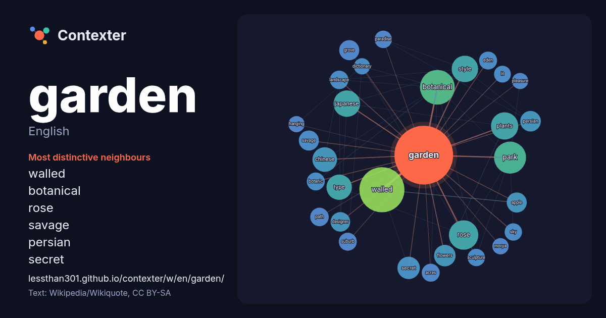

English · word of the day list
garden
The words found around it in 1952 instances from English Wikipedia, Wikiquote and Hacker News.

Most distinctive neighbours
- walled 99×
- botanical 56×
- rose 27×
- savage 19×
- persian 18×
- secret 18×
- grove 18×
- apple 17×
- botanic 17×
- eden 16×
- flowers 16×
- japanese 16×
- plants 15×
- designer 15×
- paradise 15×
- morya 14×
- chinese 14×
- lit 14×
- acres 14×
- landscape 13×
× = how many times more often than in general English Wikipedia text.
Most frequent neighbours
- walled 101
- botanical 60
- park 51
- public 45
- city 43
- rose 43
- plants 37
- house 36
- japanese 35
- style 35
- located 33
- type 32
- chinese 30
- film 27
- states 27
- home 25
- secret 25
- design 24
- flowers 23
- album 22
In context
- identifying even the wildest wild garden is control. The garden can incorporate both natural and artificial materials. Gardens often have design features including Wikipedia snippets · Garden
- Madison Square Garden, colloquially known as the Garden or by its initials MSG, is a multi-purpose indoor arena in Midtown Manhattan, New York City, U Wikipedia snippets · Madison Square Garden
- The Garden of Eden (/ˈiːdən/ EE-dən; Biblical Hebrew: גַּן־עֵדֶן, romanized: gan-ʿĒḏen; Greek: Εδέμ; Latin: Paradisus), also called Garden of God (גַּן־יְהֹוָה Wikipedia snippets · Garden of Eden
- The Garden or The Gardens may refer to: Boston Garden, the former (and more famous) home of the Celtics and Bruins Cincinnati Gardens, the arena in Cincinnati Wikipedia snippets · The Garden
- Secret Garden, The Secret Garden or My Secret Garden may refer to: The Secret Garden, 1911 novel by Frances Hodgson Burnett, which spawned several adaptations: Wikipedia snippets · Secret Garden
- Savage Garden were an Australian pop duo consisting of Darren Hayes on vocals and Daniel Jones on guitar, keyboards, and vocals. Formed in Brisbane, Queensland Wikipedia snippets · Savage Garden
- Look up garden city or Garden City in Wiktionary, the free dictionary. Garden City or Garden Suburb may refer to: Garden city movement, an urban planning Wikipedia snippets · Garden City
- The Secret Garden is a children's novel by Frances Hodgson Burnett first published in book form in 1911, after serialisation in The American Magazine (November Wikipedia snippets · The Secret Garden
More English words
- art
- autumn
- bell
- bread
- bridge
- cat
- city
- climate
- clock
- death
- desert
- dog
- family
- food
- forest
- god
- gold
- health
- heart
- history
- honey
- horse
- island
- language
- life
- map
- mirror
- money
- mother
- mountain
- nature
- power
- rain
- road
- salt
- science
- shadow
- silence
- song
- star
- storm
- summer
- tea
- time
- train
- truth
- water
- winter
- work
Precomputed on 2026-10-09 with default settings (±5 words, medium corpus). The interactive map can refresh it with live data.